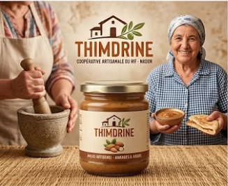
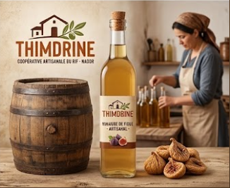
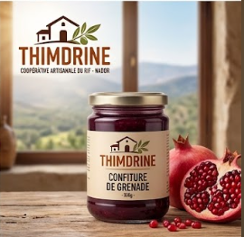

Miel de thym, huile d’olive et confiture de figue de barbarie : trois saveurs du Rif, récoltées et préparées par les femmes de la coopérative, sans additifs.

180 DH de 500g

90 DH de 1L

100 DH de 250g

50 DH de 250g

90 DH de 1L

55 DH de 150g